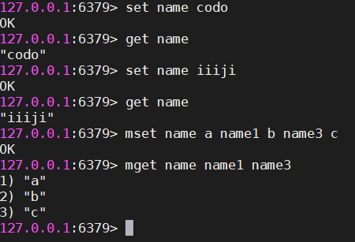

Redis学习-1-基本数据类型
Redis安装
Docker安装
1 | docker pull redis |
Linux下安装
1 | $ wget http://download.redis.io/releases/redis-3.0.7.tar.gz |
Redis服务器启动
运行启动
1 | redis-server --port 6380 #以6380为监听端口启动 |
配置文件启动
1 | redis-server `REDIS_HOME`/redis.conf #从安装目录的redis.conf启动 |
Redis的基础启动参数
| 配置名 | 配置说明 |
|---|---|
| port | 端口 |
| logfile | 日志文件 |
| dir | Redis工作目录(存放持久化文件和日志文件) |
| daemonize | 是否以守护进程的方法启动Redis |
Redis命令行客户端
交互式方法启动
redis-cli-h{host}-p{port}
1 | redis-cli -h 127.0.0.1 -p 6379#连接到本地服务端口6379的redis服务 |
命令式方式启动
redis-cli-h ip{host}-p{port}{command}
1 | redis-cli -h 127.0.0.1 -p 6379 get hello#在原基础上执行命令 |
停止Redis服务
优雅的停止方式
1
redis-cli shutdown #断开与客户端的连接，持久化文件生成
强制停止
1
kill -9 {redis-pid}#查出redis的pid,强制停止，不会做持久化操作而且还会造成缓冲区等资源不能被优雅关闭，极端情况会造成AOP和复制丢失数据
生成持久化文件停止服务
1
redis-cli shutdown nosave|save #不生成或者生成持久化文件
全局命令
查看所有key
1 | keys * |
键总数
1 | dbsize |
检查键是否存在
1 | exists key |
删除键
1 | del key #删除单个key |
键过期
1 | expire key seconds#seconds单位为秒 |
键的数据类型
1 | type key #返回key的数据类型，如果key不存在则返回none |
Redis基本数据类型
数据结构和内部编码
object encoding key查询key的内部编码
string(字符串)
string的基本概念
Redis的字符串是动态字符串，是可以修改的字符串，类似java的ArrayList。

string的基本操作
新增/修改
单个新增/修改：
set命令1
2set name code
set name1 code1批量新增/修改：
mset1
mset name2 boy name3 girl name4 bg
自增计数
自增命令 incr、incrby
1 | set age 16 |
查询
单个查询：
get命令1
get name #不存在返回nil
批量查询：
mget命令1
mget name name2 name3
是否存在：
exists命令1
exists name#存在返回1,不存在返回0
删除
删除命令：del
1 | del name #成功删除返回1,否则返回2 |
过期
一般过期：
expire1
2set name lin
expire name 5 #设置成功返回1，反之返回0set拓展过期：
setex1
setex name 5 codehole # setnx = set等价于expire
list(列表)
基本概念
Redis的列表相当于Java里的linkedList，底层是链表，当列表弹出了最后一个元素之后，该数据结构自动被删除，内存被回收。
Redis的列表结构常用来做异步队列使用。将需要延后处理的任务结构体序列化成字符串塞进Redis的列表，另一个线程从这个列表种轮询数据进行处理。
基本操作
队列：右边进左边出
入队：
rpush1
rpush books java python golang
出队：
lpop1
lpop books #返回java
队列长度：
llen1
llen books #返回3
栈：右边进右边出
入栈：
rpush1
rpush books java python golang
出栈：
rpop1
rpop books #返回golang
慢操作
lindex：根据索引查找元素1
lindex books 1 #返回list中的第二个元素
lrange：遍历列表1
2lrange books 0 -1 #获取所有元素
lrange books 0 1 #返回索引0到索引1之间的元素，类似python和go中的切片ltrim：截取列表1
ltrim books 0 -1#截取区间内的元素返回一个新的
hash(哈希)
基本概念
Redis的字典相当于hashMap，无序，Redis为了高性能，不能堵塞服务，所以采用渐进式rehash策略。
渐进式rehash会在rehash的同时，保留新旧两个hash结构，查询时会同时查询两个hash结构，然后在后续的定时任务中以及hash的子指令中，循序渐进地将旧hash的内容一点点迁移到新的hash结构中。
基本操作
增加元素：
单个元素增加hset
1 | hset books1 java "think in java" |
批量增加元素hmset
1 | hmset books1 java "think in java" python "learn python" golang "modern golang programming" |
查询元素
通过key获取value：hget
1 | hget books1 golang |
遍历hash：hgetall
1 | hgetall books1#key和value间隔遍历出来 |
返回hash容量：hlen
1 | hlen books1 |
计数：hincrby
1 | hincrby user age 1#返回1 |
set(集合)
基本概念
Redis的集合相当于Java中的hashSet，它内部的键值对是无序的唯一的。
当集合中最后一个元素被移除后，数据结构自动删除，内存被回收。
基本操作
增加元素：sadd
1 | sadd books2 java #在books2中添加java |
删除元素：spop
1 | spop books1 #删除一个元素 |
查询元素
遍历set：smembers
1 | smembers books#和元素插入的顺序不一致 |
判断元素是否存在：sismember
1 | sismember books1 php#存在返回1，反之返回0 |
统计集合大小：scard
1 | scard books1 |
zset(有序集合)
基本概念
Redis的zset类似java的SortedSet和hashMap的结合体，无重复的有序hash。它的内部实现用的是一种叫做“跳跃列表”的数据结构。
基本操作
添加元素：zadd
1 | zadd boo 9.0 "think in java" |

遍历集合
正序遍历：zrange

逆序遍历：zrevrange

根据分值区域遍历：zrangebyscore

根据分值区域遍历返回分值：zrangebyscore

获取指定value的score：zcore

计算集合容量：zcard
1 | zcard boo #返回3 |
排序
排名：zrank
1 | zrank boo "think in java" #返回2，排名第2 |
删除元素：zrem
1 | zrem boo "think in java" |

容器型数据结构
容器数据结构
list/set/hash/zset 这四种数据结构是容器型数据结构，它们共享下面两条通用规则
- 容器不存在，就创建一个，再进行操作。
- 如果容器里元素没有了，那么立即删除元素，释放内存。
过期时间
Redis所有的数据结构都可以设置过期时间，时间到了，Redis会自动删除相应的对象。